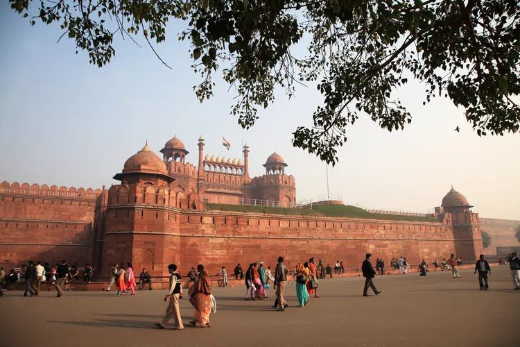

The Ultimate Guide to the Red Fort in India

Delhi's colossal Red Fort (also known as Lal Qila) was home to emperors of the formidable Mughal dynasty for almost 200 years, until 1857 when the British took over. However, the fort isn't just a long-standing symbol of the grandeur of the Mughal era. It has withstood the turbulent trials and tribulations of time—and attack—to be the setting of some of India's most important historical events that shaped the country. Nowadays, the fort is one of Delhi's most popular tourist attractions.
Location
The Red Fort's hefty sandstone walls enclose nearly 255 acres of land near the western bank of the Yamuna River, at the end of Old Delhi's tumultuous Chandni Chowk thoroughfare. It's a few miles north of the Connaught Place business district and Paharganj backpacker area.
When to Go
The best time is from November to February, otherwise it can be unbearably hot or rainy.
You'll be able to get some excellent off-season discounts though.
It’s well worth the effort to get up early and spend sunrise there, as it majestically reveals itself.
Visiting around dawn will also enable you to beat the huge crowds that start arriving later in the morning.
Getting There
Aim to visit as early as possible in the morning before the crowds arrive. If you're not staying late, it's recommended that you leave by 4 p.m. to avoid the insane rush hour traffic.
Take the Delhi Metro train.
Opening Hours
The fort is open daily from 6 a.m. until 9 p.m., except on Mondays.
Allow a few hours to explore it and relax on its lawn before heading back out into the chaos.
Entry Fees and Information
Ticket prices increased in August 2018 and a discount is provided on cashless payment.
Cash tickets now cost 40 rupees for Indians, or 35 rupees cashless.
Foreigners pay 600 rupees cash, or 550 rupees cashless.
Children under 15 years of age can enter for free.